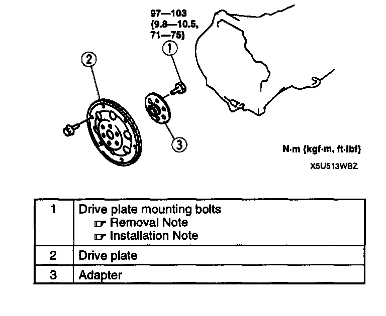
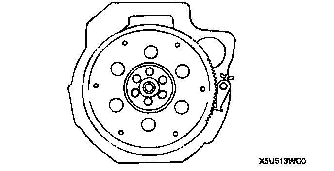
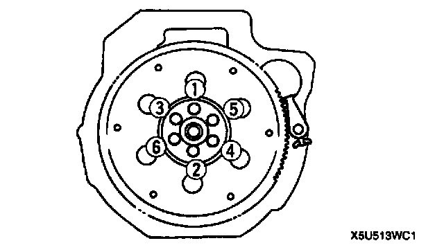

Flex Plate: Service and Repair
DRIVE PLATE REMOVAL/INSTALLATION
1. Remove in the order indicated in the table.
2. Install in the reverse order of removal.
Drive Plate Mounting Bolts Removal Note

1. Set the SST against the drive plate.
2. Remove the bolts and the drive plate.
Drive Plate Mounting Bolts Installation Note

1. Set the SST against the drive plate.
2. Tighten the drive plate mounting bolts gradually in the order shown.
Tightening torque 97 - 103 Nm (9.8 - 10.5 kgf-m, 71 - 75 ft. lbs.)